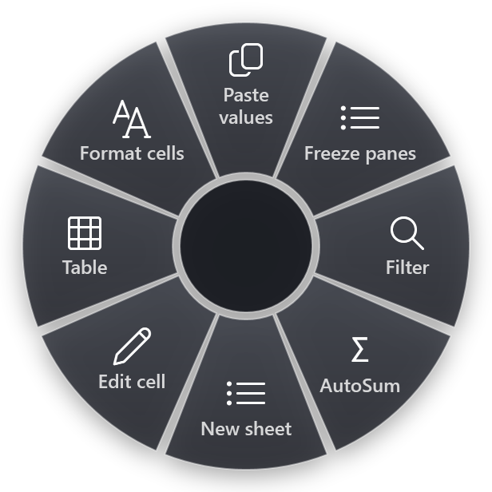

Excel has hundreds of keyboard shortcuts. You do not need hundreds. You need the forty or so that cover moving around a sheet, selecting, entering data, formatting and working with tables, and you need them in a form you can actually learn.
This list is for Excel for Windows (Microsoft 365, 2021 and 2019). Every shortcut on it is in Microsoft's own list of Excel keyboard shortcuts. A few that you will find on other cheat sheets are left out because they depend on the version or the keyboard layout.
Moving around
- Ctrl+Arrow key jumps to the edge of the current block of data. Learn this one first.
- Ctrl+Home goes to cell A1 (or the top-left cell below frozen panes).
- Ctrl+End goes to the last used cell on the sheet.
- Ctrl+Page Down and Ctrl+Page Up switch to the next and previous sheet.
- Ctrl+G or F5 opens Go To. Type a cell address or a named range and press Enter.
- Ctrl+F finds, Ctrl+H finds and replaces.
Selecting
- Shift+Space selects the whole row, Ctrl+Space the whole column.
- Ctrl+Shift+Arrow key extends the selection to the edge of the data. Combine it with the two above: click a cell, Ctrl+Shift+Down, and the column of data is selected no matter how long it is.
- Ctrl+A selects the current region; press it again for the whole sheet.
- Shift+Arrow key grows or shrinks the selection one cell at a time.
Entering and editing data
- F2 edits the active cell with the cursor at the end, so you do not have to double-click.
- Alt+Enter starts a new line inside the same cell.
- Ctrl+Enter fills every selected cell with what you just typed.
- Ctrl+D fills down from the cell above, Ctrl+R fills right from the cell on the left.
- Ctrl+; enters today's date, Ctrl+Shift+: the current time. Both are values, not formulas.
- Ctrl+E runs Flash Fill: type one example of the pattern you want, then press it.
- F4 while editing a formula cycles a reference through $A$1, A$1, $A1 and A1. Outside a formula it repeats your last action.
- Ctrl+Z undoes, Ctrl+Y redoes.
Rows, columns and sheets
- Ctrl+Shift+Plus opens the Insert dialog. With a whole row selected it inserts a row straight away.
- Ctrl+Minus deletes; with a row selected it removes the row.
- Ctrl+9 hides the selected rows, Ctrl+0 the selected columns.
- Shift+F11 inserts a new worksheet.
So "insert a row above" is Shift+Space, then Ctrl+Shift+Plus. Two shortcuts you already know, in a row.
Formatting
- Ctrl+1 opens Format Cells, the dialog behind almost every formatting question.
- Ctrl+B, Ctrl+I and Ctrl+U for bold, italic and underline.
- Ctrl+Shift+$ applies the currency format, Ctrl+Shift+% percent, Ctrl+Shift+# the date format.
- Ctrl+Shift+! applies the number format with two decimals and a thousands separator.
- Ctrl+Shift+~ goes back to the General format.
- Ctrl+Shift+& adds an outline border to the selection.
Tables, filters and formulas
- Ctrl+T turns the current range into a table with headers, banding and filters.
- Ctrl+Shift+L turns the filter buttons on or off.
- Alt+Down on a header cell opens its filter list.
- Alt+= inserts an AutoSum for the cells above or to the left.
- Shift+F3 opens Insert Function.
- Ctrl+` shows formulas instead of results, a quick way to check a sheet someone else built.
- F9 recalculates the workbook when calculation is set to manual.
- Alt+F1 creates a chart from the selection on the same sheet, F11 on a new chart sheet.
Paste values, paste special
- Ctrl+Alt+V opens Paste Special. V then Enter pastes values only.
There is a whole article on paste values and why it sometimes fails, including the newer Ctrl+Shift+V in Microsoft 365.
Ribbon key tips: the shortcuts nobody has to learn
Press Alt and Excel puts a letter on every ribbon tab, then on every button inside it. You can press them in sequence without holding anything. Freeze panes, for example, is Alt W F F: View tab, Freeze Panes menu, Freeze Panes. Wrap text is Alt H W.
Key tips can change between Excel versions and languages, so read them off the screen instead of from a list. After you have done the same sequence ten times, your fingers will know it.
How to remember them
Do not try to learn this page in one go. A plan that works:
- Pick three. Choose the three shortcuts from this list that replace something you do with the mouse every day. For most people that is Ctrl+Arrow key, Ctrl+Shift+Arrow key and F2.
- Use them for a week, nothing else. Every time you reach for the mouse to do one of those three things, stop and use the key instead.
- Then add three more. Formatting (Ctrl+1), tables (Ctrl+T) and filters (Ctrl+Shift+L) are good second picks.
- Group by letter. Many Excel shortcuts follow the word: Down for fill down, Right for fill right, Table, Find, H sits next to F for replace.
- Hover the ribbon. Most ribbon buttons show their shortcut in the tooltip. If you see one twice in a day, it is worth learning.
The shortcuts that never stick are usually the ones you need once a week: set print area, remove duplicates, pivot table, fit to one page. Those are better put somewhere you can see them.
The ones you forget, on a ring
RadialDeck is the radial menu for Windows that we make. When Excel is in front, the same hotkey that opens your usual ring opens an Excel ring instead. You hold the key, flick toward a slice and let go.

The gallery has ready-made Excel slices for the things on this page and the weekly ones you would rather not memorize: Paste values only, Freeze panes, Toggle filter, AutoSum, New sheet, Edit cell, Table, Format cells, Fill down, Absolute ref, Chart, Find/Replace, Date, Insert a row above, Delete the row, Wrap text, Autofit column width, Pivot table, Remove duplicates, Set print area, Fit to one page, Save this sheet as PDF and Send as attachment. The Excel page lists all 29.
A good split: learn the navigation and selection keys by heart, because you use them every few seconds. Put the rest on the ring.
Quick reference
- Move: Ctrl+Arrow key, Ctrl+Home, Ctrl+End, Ctrl+Page Down
- Select: Shift+Space, Ctrl+Space, Ctrl+Shift+Arrow key
- Edit: F2, Alt+Enter, Ctrl+Enter, Ctrl+D, F4
- Format: Ctrl+1, Ctrl+Shift+$, Ctrl+Shift+%
- Data: Ctrl+T, Ctrl+Shift+L, Alt+=, Ctrl+Alt+V
RadialDeck is free for two rings and has a 14-day trial of Pro, which adds a ring per program such as the Excel ring above. It is in the Microsoft Store.
Try it in RadialDeck
Free for two rings, with a 14-day trial of everything in Pro. Windows 10 and 11, from the Microsoft Store.